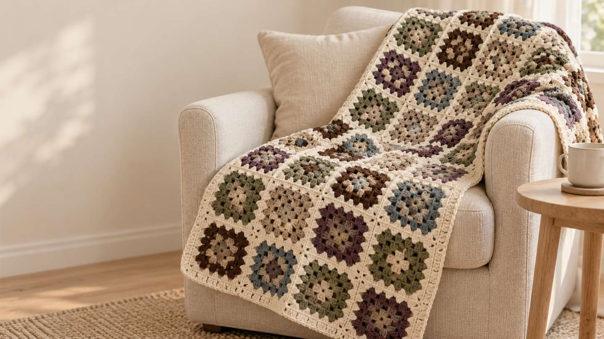
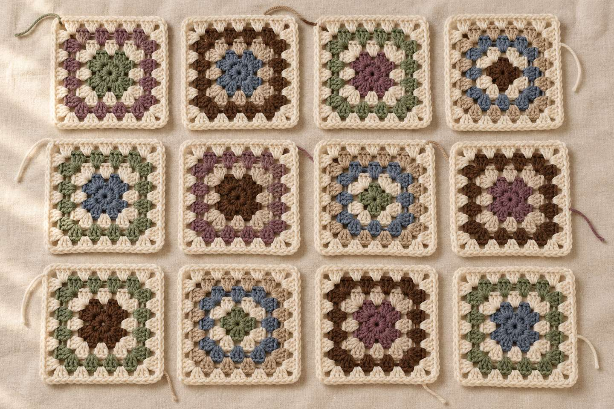
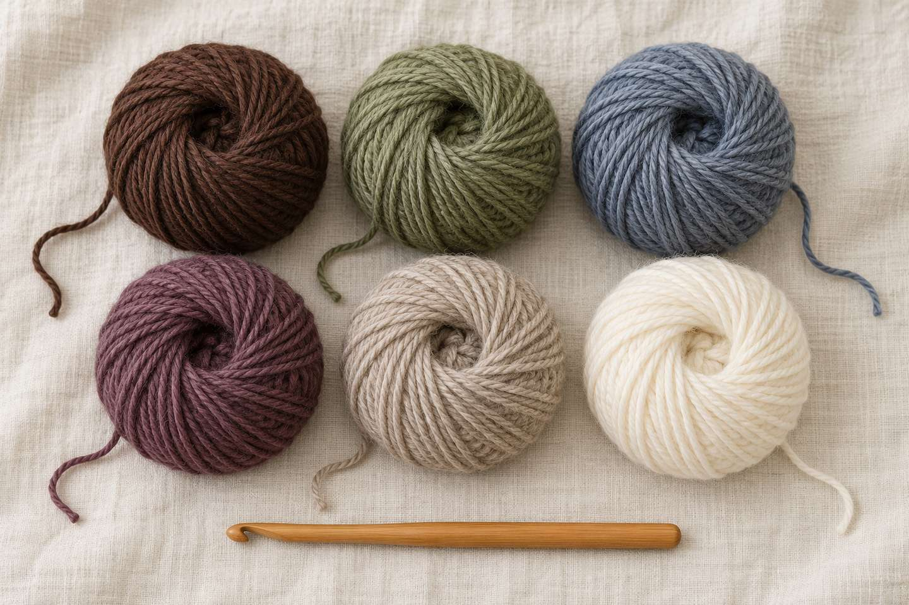
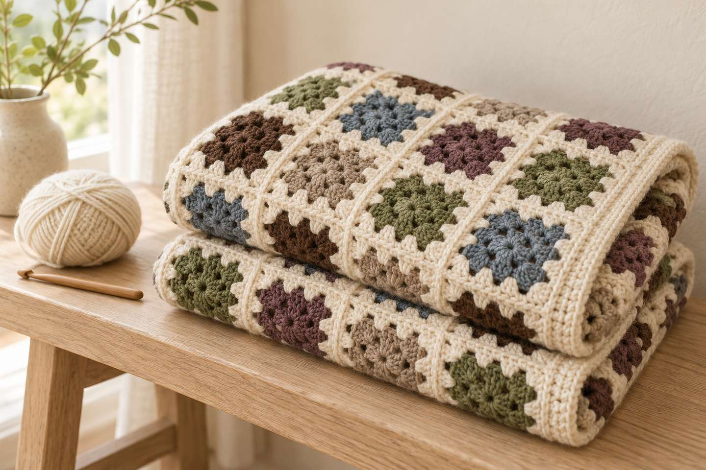
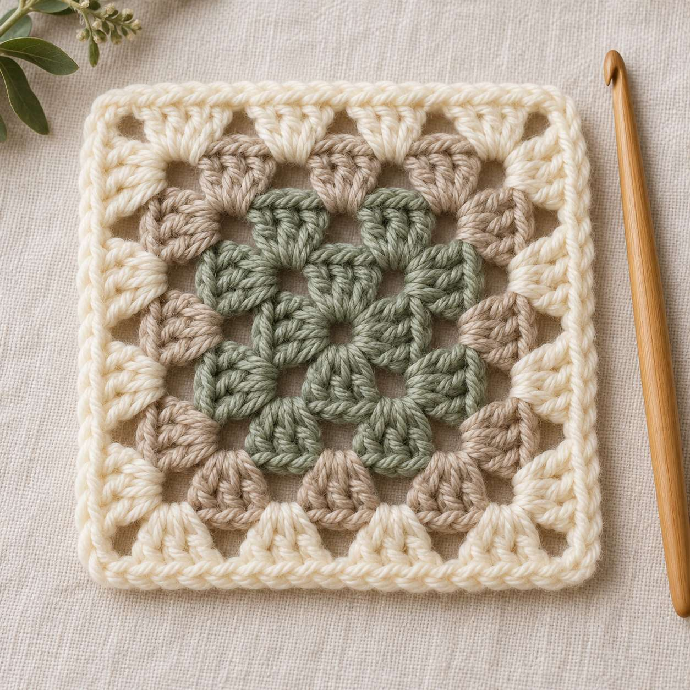
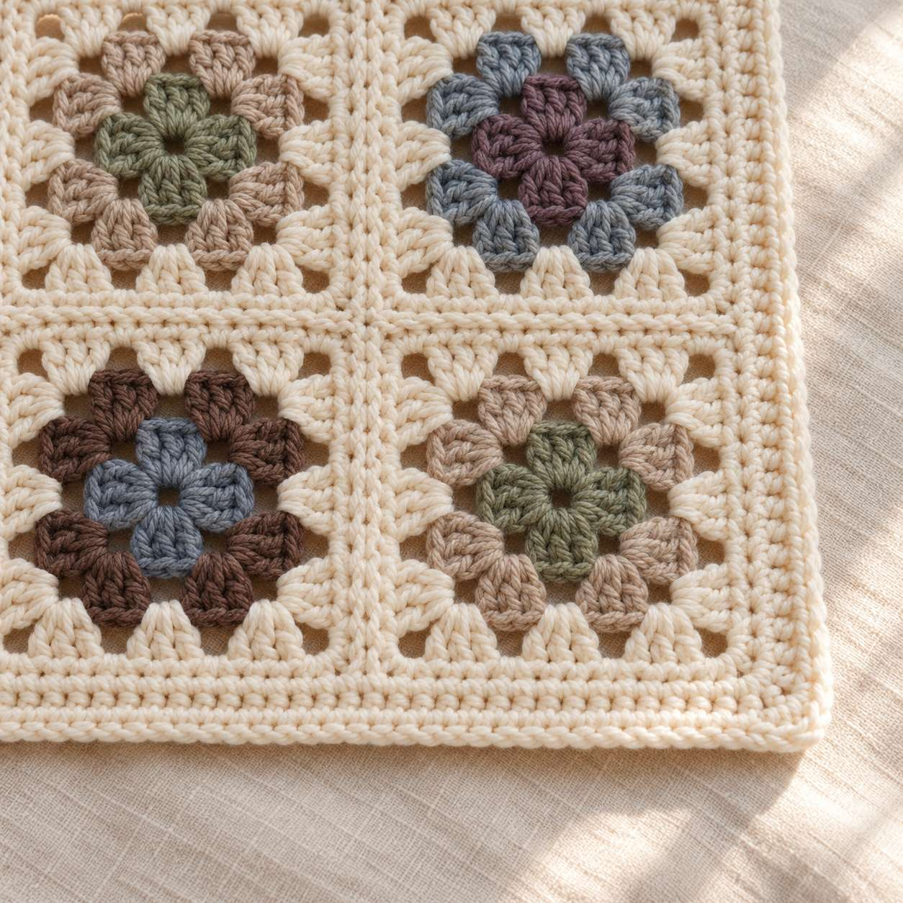

Kuscheldecke häkeln: Granny-Square-Decke für den Winter – Anleitung, Größen und Trendfarben 2026

Kurz gesagt
Eine Kuscheldecke aus Granny Squares ist das ideale Winterprojekt, auch für Anfängerinnen: Du häkelst viele gleiche Quadrate aus Stäbchengruppen, verbindest sie und häkelst einen Rand aus festen Maschen. Mit Garn der Stärke Aran/Worsted und einer 5-mm-Nadel misst ein Quadrat nach 6 Runden etwa 15 cm (Richtwert); für eine Kniedecke von ca. 90 × 120 cm brauchst du dann 48 Quadrate. Unten findest du die kostenlose Anleitung mit Maschenzahlen für jede Runde, eine Größentabelle und die Winterfarben 2026.
Wenn es draußen früh dunkel wird, gibt es kaum etwas Schöneres als ein Projekt, das auf dem Sofa wächst und später genau dort wärmt. Eine Kuscheldecke klingt nach viel Arbeit – aber aus Granny Squares entsteht sie in kleinen Etappen: ein Quadrat am Abend, ein paar am Wochenende, und irgendwann liegt ein ganzer Stapel vor dir. In diesem Beitrag erfährst du, welche Deckenarten es gibt, welche Farben diesen Winter angesagt sind, wie du Größe und Garnmenge berechnest – und wie das klassische Granny Square Runde für Runde funktioniert.
1. Warum ist eine Kuscheldecke das perfekte Winterprojekt?

Der Strick- und Häkelzubehörhersteller KnitPro nennt in seinem Saisonüberblick für 2026 große Decken („oversized blankets and afghans“) als erstes von vier typischen Winterprojekten und empfiehlt dafür mittelstarke bis dicke Garne (Worsted und Bulky) aus Merino oder Wollmischungen, weil sie Wärme halten und trotzdem weich bleiben (siehe Quellen). Eine Decke aus Quadraten hat außerdem ganz praktische Vorteile:
- In Etappen: Jedes Quadrat ist ein kleines, fertiges Erfolgserlebnis – ideal für kurze Abende.
- Reste verwerten: Bunte Mitten aus Restgarn, eine gemeinsame Farbe für die letzte Runde – schon wirkt alles zusammengehörig.
- Leicht mitzunehmen: Ein Knäuel, eine Nadel und ein paar Quadrate passen in jede Tasche.
- Einfache Technik: Du brauchst nur Magic Ring, Luftmaschen, Stäbchen und Kettmaschen – alles aus den Häkel-Basics.
2. Welche Deckenarten gibt es – und welche passt zu dir?
| Deckenart | So funktioniert's | Niveau | Gut für |
|---|---|---|---|
| Granny-Square-Decke | Viele kleine Quadrate aus Stäbchengruppen, die am Ende verbunden werden | Anfängerin | Reste, Häkeln unterwegs, bunte Decken |
| Streifendecke in Reihen | Reihe für Reihe, z. B. aus Stäbchen oder festen Maschen, mit Farbwechseln | Anfängerin | Ruhige, schlichte Decken ohne Nähen |
| Temperaturdecke | Jede Reihe steht für einen Tag; die Farbe richtet sich nach der Tageshöchsttemperatur | Anfängerin, braucht Ausdauer | Ein Jahresprojekt ab dem 1. Januar |
| Mosaikdecke | Grafische Muster aus zwei Farben, die durch versetzt gehäkelte Maschen entstehen | Fortgeschrittene | Alle, die gern nach Musterplan häkeln |
Das Granny Square hat sich laut KnitPro längst über die klassische Decke hinaus zu Westen, Cardigans und Taschen weiterentwickelt – für den Einstieg bleibt die Decke aber das einfachste Projekt, weil jedes Quadrat gleich ist. Die Temperaturdecke ist eine schöne Idee für das neue Jahr: Wie der US-Sender KSAT erklärt, ist sie ein Bild des Wetters an deinem Ort – jede Reihe ein Tag, die Farbe nach der Tageshöchsttemperatur. Der Händler Hooks & Needles schlägt dafür in seinem Farbtrend-Beitrag für 2026 eigene Farbabstufungen vor (siehe Quellen).
Tipp: Du planst eine Temperaturdecke für 2027? Dann hast du bis Neujahr Zeit, Farben und Temperaturstufen festzulegen und das Garn zu kaufen.
3. Welche Farben sind im Winter 2026 angesagt?

Der Häkelblog Sweet Softies beschreibt für Herbst und Winter 2026 eine ruhige, warme Farbwelt: Statt knalligem Weihnachtsrot greifen viele zu weicheren Tönen. Genannt werden unter anderem Brauntöne wie Schokolade, Kakao, Zimt und Karamell, Waldgrün, Moos und Oliv, kühle Blautöne wie Denim, Schieferblau und gedecktes Navy, gedämpfte Lilatöne wie Pflaume und staubiges Lavendel – ausdrücklich auch für Kuscheldecken – sowie Neutraltöne wie Creme und Hafer (siehe Quellen). Daraus habe ich diese Deckenpalette gemacht:
- Schokobraun
- Moosgrün
- Schieferblau
- Pflaume
- Hafer
- Creme
Tipp: Häkle die Mitten der Quadrate in wechselnden Farben, aber die letzte Runde aller Quadrate in derselben hellen Farbe (z. B. Hafer oder Creme). So wirkt auch eine bunte Restedecke ruhig und zusammengehörig.
4. Wie groß wird die Decke – und wie viele Quadrate brauchst du?

Die Tabelle gilt für Quadrate von ca. 15 cm Seitenlänge. Der Rand macht die Decke ringsum noch etwa 1–2 cm größer. Häkle zuerst ein Probequadrat, miss es und rechne bei Abweichungen mit deinem Maß.
| Decke | Quadrate (Breite × Länge) | Anzahl | Größe ohne Rand |
|---|---|---|---|
| Babydecke | 5 × 6 | 30 | ca. 75 × 90 cm |
| Kniedecke | 6 × 8 | 48 | ca. 90 × 120 cm |
| Sofadecke | 8 × 10 | 80 | ca. 120 × 150 cm |
So berechnest du die Garnmenge
Wie viel Garn du brauchst, hängt stark von Garn und Handspannung ab. Am zuverlässigsten ist diese Methode: Wiege ein fertiges Quadrat (Küchenwaage), nimm das Gewicht mal die Anzahl der Quadrate und rechne für Verbinden und Rand etwa 10–15 % dazu. Ein Rechenbeispiel: Wiegt dein Quadrat 12 g, brauchst du für eine Kniedecke 48 × 12 g = 576 g, mit Reserve also rund 650 g. Kaufe alle Knäuel einer Farbe möglichst aus derselben Farbpartie (steht auf der Banderole).
Anleitung: klassisches Granny Square und Kuscheldecke

- Größe
- Quadrat ca. 15 cm nach 6 Runden (Richtwert); Decke siehe Tabelle
- Zeit
- Richtwert ca. 30 Minuten pro Quadrat, dazu Verbinden und Rand
- Niveau
- Anfängerin (Magic Ring, Luftmaschen, Stäbchen, Kettmaschen)
- Garn
- Aran/Worsted (mittelstark bis dick), Menge nach der Wiege-Methode oben
- Zubehör
- Häkelnadel 5 mm (oder nach Banderole), Vernähnadel, Schere, Maßband, Küchenwaage
Abkürzungen
MR = Magic Ring · Lm = Luftmasche · Stb = Stäbchen · Km = Kettmasche · fM = feste Masche · Eckbogen = Bogen aus 2 Lm in der Ecke · Ecke = 3 Stb, 2 Lm, 3 Stb in denselben Eckbogen. Alle Abkürzungen findest du in der Abkürzungs-Übersicht. Du häkelst in Runden, ohne zu wenden.
Granny Square (Runde 1–6)
- Runde 1: MR, 3 Lm (zählen als 1. Stb), 2 Stb in den Ring, 2 Lm, *3 Stb, 2 Lm* noch 3× wiederholen. Ring zuziehen und mit 1 Km in die 3. Anfangs-Lm schließen (12 Stb, 4 Eckbögen)
Übergang (gilt am Ende jeder Runde): 1 Km in jedes der nächsten 2 Stb und 1 Km in den Eckbogen. Jetzt sitzt du in einer Ecke. - Runde 2: Im Eckbogen 3 Lm (= 1. Stb), 2 Stb, 2 Lm, 3 Stb. *1 Lm, Ecke in den nächsten Eckbogen* 3×. 1 Lm, mit 1 Km in die 3. Anfangs-Lm schließen, Übergang (24 Stb = 8 Gruppen)
- Runde 3: Erste Ecke wie in Runde 2. *1 Lm, 3 Stb in den 1-Lm-Bogen, 1 Lm, Ecke* 3×. 1 Lm, 3 Stb in den letzten 1-Lm-Bogen, 1 Lm, Km, Übergang (36 Stb = 12 Gruppen)
- Runde 4: Erste Ecke, dann an jeder Seite in jeden 1-Lm-Bogen 3 Stb, jeweils getrennt durch 1 Lm; in jeden Eckbogen eine Ecke. Km, Übergang (48 Stb = 16 Gruppen)
- Runde 5: wie Runde 4 – pro Seite kommt in jeder Runde eine Gruppe dazu (60 Stb = 20 Gruppen)
- Runde 6: wie Runde 4 (72 Stb = 24 Gruppen)
Faden mit ca. 15 cm Rest abschneiden und vernähen. Miss dein Quadrat: Ist es deutlich größer als 15 cm, nimm eine etwas kleinere Nadel; ist es kleiner, häkle eine 7. Runde (84 Stb) oder nimm eine größere Nadel. Wichtig ist vor allem, dass alle Quadrate gleich groß werden. Farbwechsel: Statt des Übergangs den Faden abschneiden und die neue Farbe mit 1 Km in einem beliebigen Eckbogen anschlingen, dann mit 3 Lm beginnen.

Verbinden und Rand
- Lege alle Quadrate in der gewünschten Anordnung aus und mach ein Foto, damit du die Reihenfolge nicht vergisst.
- Lege zwei Quadrate rechts auf rechts. Häkle von Eckbogen zu Eckbogen Km durch die hinteren Maschenglieder beider Quadrate – bei 6 Runden sind das pro Seite 18 Stb und 5 Lm, also 23 Km. Verbinde zuerst die Quadrate jeder Querreihe zu Streifen, dann die Streifen miteinander.
- Rand, Runde 1: An einer Ecke beginnen. Rundherum in jedes Stb und in jeden 1-Lm-Bogen 1 fM, in jeden Eckbogen neben einer Naht 1 fM, in die vier Außenecken je 3 fM in den Eckbogen. Mit Km schließen.
- Rand, Runde 2: 1 Lm, in jede fM 1 fM, in die mittlere fM jeder Außenecke 3 fM. Mit Km schließen und alle Fäden vernähen.
- Zum Schluss leicht anfeuchten oder dämpfen und flach trocknen lassen – richte dich dabei nach der Pflegeangabe auf der Banderole.
Wie kannst du die Decke abwandeln?
- Restedecke: Runde 1–5 in bunten Resten, Runde 6 bei allen Quadraten in Creme oder Hafer.
- Ton in Ton: Ordne die Quadrate als Farbverlauf an, z. B. von Schokobraun über Karamell bis Hafer.
- Ein großes Granny: Häkle einfach immer weiter Runde um Runde – ganz ohne Verbinden. Pro Runde kommen 12 Stb dazu.
- Temperaturdecke 2027: Lege für Temperaturbereiche Farben fest und häkle ab dem 1. Januar jeden Tag eine Reihe.
Bei so vielen Runden und Quadraten hilft dir der Maschenzähler: Er zählt Runden mit und merkt sich deinen Stand.
Noch mehr gemütliche Ideen
Passend dazu: Welches Garn für Häkelanfänger?, meine Ideen für Weihnachten 2026 und weitere Projekte für dein Zuhause unter Wohndeko. Eigene Quadrate entwerfen kannst du im Muster-Generator. Wenn du das Häkeln erst lernst, starte mit dem Lernpfad.
Und du? In welchen Farben häkelst du deine Kuscheldecke? Zeig mir deine Quadrate auf Instagram oder TikTok! 🧶
Häufige Fragen zu gehäkelten Kuscheldecken
Wie viele Granny Squares brauche ich für eine Decke?
Bei Quadraten von ca. 15 cm brauchst du für eine Babydecke (ca. 75 × 90 cm) 30 Quadrate, für eine Kniedecke (ca. 90 × 120 cm) 48 Quadrate und für eine Sofadecke (ca. 120 × 150 cm) 80 Quadrate. Häkle zuerst ein Probequadrat und rechne mit deinem eigenen Maß.
Wie viel Garn brauche ich für eine Häkeldecke?
Wiege ein fertiges Quadrat, nimm das Gewicht mal die Anzahl der Quadrate und rechne etwa 10–15 % für Verbinden und Rand dazu. Wiegt ein Quadrat 12 g, brauchst du für 48 Quadrate rund 650 g. Kaufe jede Farbe möglichst aus derselben Farbpartie.
Welches Garn eignet sich für eine Kuscheldecke?
Für den Winter eignen sich mittelstarke bis dicke Garne (Aran/Worsted oder Bulky). Merino und Wollmischungen wärmen gut und bleiben weich. Wird die Decke oft gewaschen, wähle ein maschinenwaschbares Garn und beachte die Pflegeangaben auf der Banderole.
Warum wird mein Granny Square schief oder wellig?
Häufige Gründe sind eine vergessene oder doppelte Stäbchengruppe, eine nicht in die 3. Anfangs-Luftmasche geschlossene Runde oder zu viele Luftmaschen zwischen den Gruppen. Zähle nach jeder Runde: Runde 1 hat 12 Stäbchen, jede weitere Runde 12 mehr. Ein leichtes Verdrehen ist normal und verschwindet meist beim Spannen.
Was ist eine Temperaturdecke?
Eine Temperaturdecke ist ein Bild des Wetters an deinem Ort: Jede Reihe steht für einen Tag des Jahres, und die Farbe richtet sich nach der Tageshöchsttemperatur. Viele beginnen sie am 1. Januar und häkeln jeden Tag eine Reihe.
Quellen
- KnitPro: Seasonal Crochet Patterns for 2026 (Winterprojekte und Garne, englisch)
- KnitPro: Fall 2026 Crochet Trends (Granny Squares, englisch)
- Sweet Softies: The Biggest Crochet Color Trends for Fall and Winter 2026 (Farben, englisch)
- Hooks & Needles: 2026 Yarn Color Trends Every Crocheter Should Know (Temperaturdecken, englisch)
- KSAT: What is a temperature blanket and why are people crocheting or knitting them? (englisch, 2024)